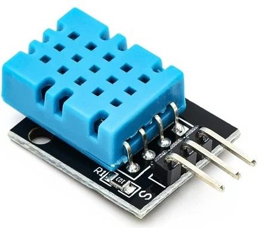
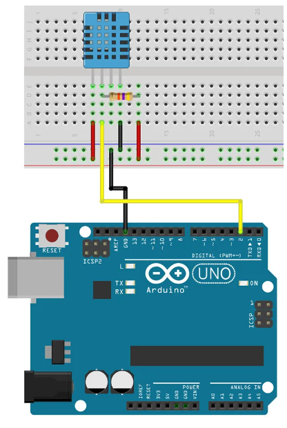
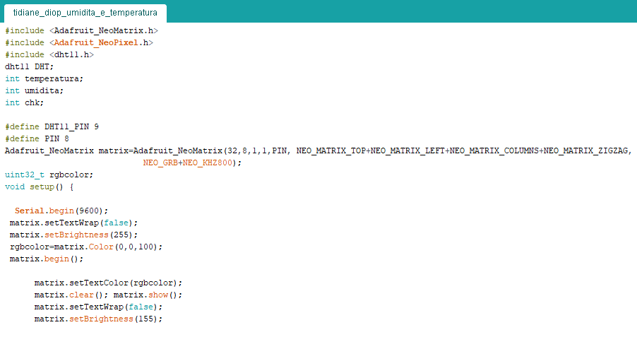
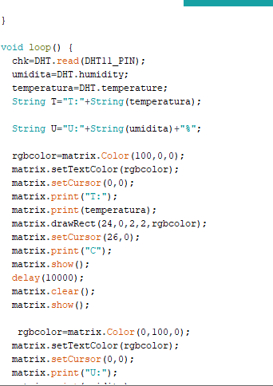
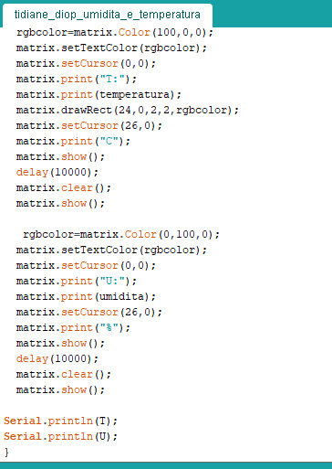

Con questa relazione mostro il processo che ho svolto per programmare ed costruire il circuito rappresentato nell'immagine.
Questo circuito ha lo scopo di rilevare la temperatura ed l'umidità dell' ambiente in cui è posto ed inseguito di visualizzare su un pannello i valori precedentemente rilevati, facendo alternare a ogni secondo la visualizzazione di valori di temperatura a quelli di umidità.
Per essere in grado di svolgere tale funzione il circuito è dotato di un fondamentale componente ovvero il sensore digitale DHT11; il quale ha la funzione di ricavare valori di temperatura ed umidità .
Realizzazione del circuito

A seguito dell' acquisizione di informazioni riguardanti il funzionamento del circuito ed la funzione che esso doveva svolgere mi sono informato riguardo la piedinatura del componente DHT11 per riuscire a svolgere collegamenti corretti tra esso ed la scheda arduino.
Dopo l'acquisizione di queste fondamentali informazioni ho costruito su breadboard il seguente circuito utilizzando i componenti presenti nell' immagine.
(1 resistenza, 1 sensoreDHT11, ed una scheda arduino uno)
Per la realizzazione del circuito ho posizionato sulla breadboard il componente DHT11 ed sotto ad esso ho posizionato parallelamente una resistenza proprio come mostrato nell'immagine.
Ed dopo ciò ho eseguito i collegamenti tra la breadboard ed la scheda arduino nel seguente modo: prima ho collegato al + il primo piedino del sensore dht11, inseguito il secondo a il pin digitale 9 della scheda arduino, terzo piedino al GND ed al quarto piedino ho collegato il - .
Fase di programmazione
Successivamente alla costruzione del circuito ho iniziato la fase di scrittura del programma con la quale ho dato istruzioni al circuito riguardanti quali funzioni dovesse svolgere.
Per far ciò ho innanzitutto costruito un diagramma di flusso per poter visualizzare più facilmente l'ordine nel quale dovevo impartire istruzioni al circuito.
diagramma di flusso
scrittura programma
Ed inseguito allo sviluppo del diagramma di flusso sono passato alla scrittura del programma seguendo punto per punto le operazioni descritte nel diagramma di flusso
All'inizio del programma ho aggiunto le librerie necessarie per il controllo del display ed il componente DHT11, inseguito ho dichiarato le variabili di : temperatura - umidità - controllo.
Dopo ciò ho dichiarato i pin occupati dal sensore DHT11 e dal display.
Successivamente ho impostato i parametri del display modificando l'intensità della luminosità, il colore ed la modalità con la quale si presenta il messaggio da visualizzare sul display con il comando setTextwrap(false);
Ed con il comando matrix()begin preparo all' uso il display ed specifico le sue dimensioni.
Inseguito ho cambiato i parametri del display nel seguente modo: partendo dal messaggio con le informazioni inerenti la temperatura ambientale ho reso rossa l'illuminazione dei led del display, con il comando setCursor(0,0) ho dato le coordinate dalla quale inizia a generarsi il messaggio, ed con il comando matrix.print("T") ho fatto visualizzare nel punto di coordinate (0,0) la lettera "T" ed dopo ciò ho fatto visualizzare il messaggio con le informazioni della temperatura con il comando matrix.print(temperatura),
Poi con il comando matrix.setCursor(26,0) ho spostato il punto di coordinate dalla quale si generano i messaggi per poter visualizzare la lettera "C" nel bordo destro del display per permette di specificare che le misurazioni sono in gradi centigradi
Ed per ultimo con i comandi matrix.show() e delay(1000) ho fatto visualizzare sul display tutti i messaggi precedentemente scritti ovvero T : (messaggio variabile di temperatura ) C con frequenza di 1 secondo e dopo ciò ho ripristinato il display con il comando matrix.clear. Ed fatto ripetere il ciclo.
In questa immagine ho concluso la scrittura del programma seguendo l'algoritmo precedentemente usato per la visualizzazione del messaggio con le informazioni di temperatura, ma con modifiche come: il colore dei led del display che verde, la lettera al bordo sinistro è "U" per indicare la misura di umidità mentre al bordo destro è presente "%" per indicare che la misura è percentuale